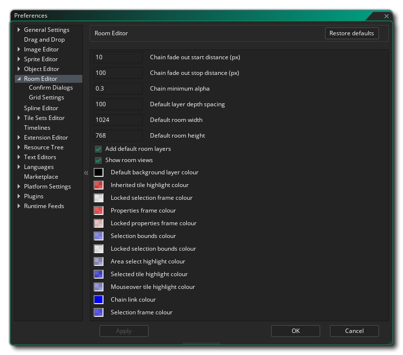
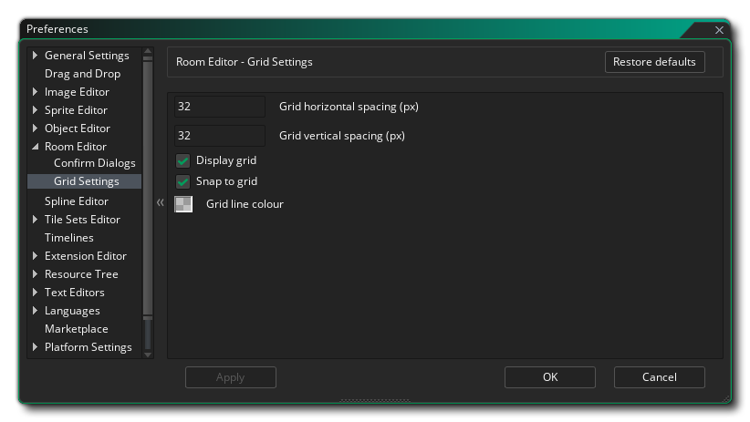

房间编辑器偏好设置用于定义房间编辑器的外观和感受。基本设置如下：
- 连接线淡出开始距离（像素）: 设置从连接的父窗口到开始淡出的距离。默认值为10像素。
- 连接线淡出停止距离（像素）: 设置从连接的父窗口到结束淡出的距离。默认100像素。
- 连接线最小 Alpha 值: 设置在淡出衰减点之后的最终alpha值。默认是0.3。
- 默认层深度间距: 当你在场景编辑器中创建多个层时，将根据层在列表中的位置自动分配深度。深度的增加量根据上面给定的的值来确定。默认值是100，所以每一层的深度将是前一层的深度加100。
- 默认房间宽度: 设置新场景的初始宽度。默认是1024像素。
- 默认房间高度: 设置新场景的初始高度。默认是768像素。
- 添加默认房间层 - 当你创建新的场景资源时， GameMaker Studio 2 将为你生成一些“基础”层 - 背景层和实例层。你可以切换这个行为，让新房间不会产生预制的层。该选项默认为“开”。
- 显示房间视野: 如果你在场景内观看视图，视图边界会在场景内显示，并且可以使用编辑器上的按钮切换该区域的边界的可见性。但是你也可以选择在打开房间的时候通过取消选中此选项让视野边界不可见（仍可用此按钮再次显示它们）。默认值是打开，使打开房间时视野边界可见。
其余的常规选项与整个场景编辑界面中使用的不同颜色有关，你双击任一色板，都可以编辑该设置的颜色。
下面列出的子目录中有更多可用于编辑的选项：

确认对话框偏好设置用于更改房间编辑器执行某些操作时消息框设置。你可以更改的消息包括：
- 自动响应更新层深度 - 当更改层深度时，会显示一条消息，提示你这样做也会自动更新其他所有层的深度。使用这个选项你可以选择显示消息，如果单击“Ok（确定）”它会更新层，单击“No（否）”将不会自动更新。
- 自动响应层锁定警告 - 如果你尝试删除场景中的层，并且该层恰好被锁定，默认情况下将显示一条消息。然而将这个选项设置为"Ok（确定）"将不会显示消息，仅仅是不让你删除层。
- 自动响应项目锁定警告 - 如果你尝试删除一个项目，它恰巧被锁定，默认情况下会显示一条消息。然而此选项设置为“Ok（确定）”将不显示消息，只是不让你删除项目。
- 自动响应项目所有者层的锁定警告 - 如果你尝试删除层上的项目，并且层恰好被锁定（即使该项目未被锁定），则默认情况下将显示一条消息以通知你无法完成此操作。然而此选项设置为“Ok（确定）”将不显示消息，只是不让你删除项目。
- 自动响应无效资源拖动错误 - 如果你尝试向未指定为该资源类型的层添加资源（例如向路径层添加精灵），则默认情况下将显示一条消息通知你无法完成此操作。然而设置选项为“Ok（确定）”将不会显示这条消息，只是不能你添加资源而已。
- 自动响应父房间项目删除 - 当你选择删除作为母场景一部分（并且在所有子场景中存在）的项目时。默认是显示一个警告消息，让你决定要做什么，但是你可以设置为“删除所有（Delete All）”来禁止这个消息，并继续从父房间和它所有的子房间删除这个项目，或者你可以选择“保留所有（Keep All）”来禁止消息并中止删除。
- 自动响应父房间层删除 - 当你选择删除作为母场景一部分（并且在所有子场景中存在）的层时。默认情况是给你显示一条警告消息让你决定做什么，但是你可以设置它为“删除所有（Delete All）”来禁止消息并继续从父房间和它所有的子房间删除这个层，或者你可以选择“保留所有（Keep All）”来禁止消息并中止删除。
- 自动响应无效层选区拖动错误 - 当你在层编辑器中选择多个层（或根本没有选择任何层），将资源拖动到场景编辑器时。默认是显示警告信息但是你可以设置这个选项为“确定（Ok）”来禁止显消息并继续，而不添加任何资源。
- 自动响应锁定/隐藏层拖动错误 - 当你选择将资源拖动到已锁定或被标记为不可见的层时。默认是显示警告信息但是你可以设置这个选项为“确定（Ok）”来禁止显消息并继续，而不添加任何资源。
网格设置（Grid Settings） 偏好设置用来更改网格覆盖的工作方式，有下面可用的选项：
- 网格水平间距（像素） - 这将以像素为单位设置场景网格的单元格水平空间。默认值32像素。
- 网格垂直间距（像素） - 这将以像素为单位设置场景网格的单元格垂直空间。默认值32像素。
- 显示网格 - 当你首次打开场景时，此选项可控制默认打开或关闭场景网格。默认情况下，它是打开的，但即使它是关闭的，你仍然可以使用房间编辑器适当的按钮再次启用它。
- 对齐到网格 - 使用这个选项你可以设置当一个房间初始化打开时是否默认将资源对齐到房间网格。默认情况下，它是打开的，但即使它是关闭的，你仍然可以使用房间编辑器适当的按钮再次启用它。
- 网格线颜色 - 此选项允许你设置场景网格线的颜色（包括 Alpha 值）。默认值是（rgba）#FFFFFF30。